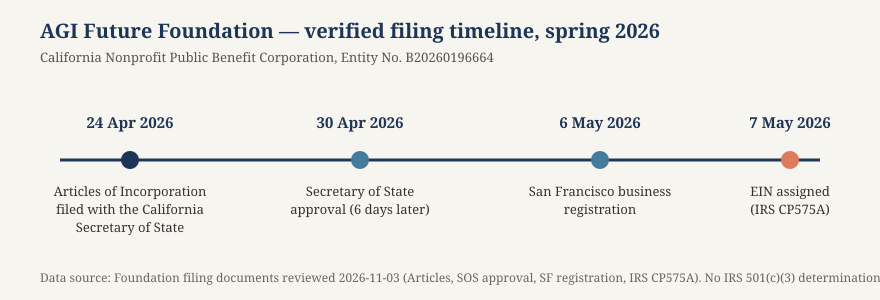

Article 46 · Foundation · AGI Future Foundation
The 501(c)(3) Determination Path: What the Foundation Must Prove, and What Happens Until It Does
The most common misunderstanding about new nonprofits — and the one this article exists to correct — is the belief that incorporating as a nonprofit makes an organisation tax-exempt. It does not. There are two separate gates, run by two separate governments, and the Foundation has passed through one and not the other.
Illustration: the application path as a paper road through open doorways. Generated illustration, not a photograph of any real place, person, or object.
Two different kinds of “nonprofit”
The first gate is the state. When the Foundation filed its Articles of Incorporation with the California Secretary of State on 24 April 2026, it became a California Nonprofit Public Benefit Corporation. That is a matter of state corporate law. It means the corporation has no owners, cannot distribute profits, and holds its assets in irrevocable dedication to its charitable purpose. It does not mean the corporation is exempt from federal income tax, and it does not mean donations to it are deductible. California incorporation is the foundation’s legal existence. It is not its tax status.
The second gate is federal. Under section 501(c)(3) of the Internal Revenue Code, an organisation must apply to the IRS for recognition of exemption, and the IRS must grant it, before the organisation is treated as tax-exempt and before donors can deduct their contributions. Except for churches, their integrated auxiliaries, and public charities whose annual gross receipts are normally less than $5,000, organisations are not treated as described in section 501(c)(3) unless they notify the IRS by applying. The Foundation is none of those exceptions. It must apply, and it must be granted, and until then it is a taxable nonprofit corporation that happens to have a charitable purpose in its Articles.
This distinction is not a technicality. It is the difference between what the Foundation can promise and what it cannot. A donor who gives today, before any determination letter exists, is giving to a corporation that is not tax-exempt, and the gift is not deductible. If the Foundation later receives a favourable determination, and if the application was filed within the 27-month window described below, the exemption can be recognised retroactively to the date of formation — which would make earlier gifts deductible after the fact. But that retroactivity is conditional, not guaranteed, and it depends on filing on time and on the IRS granting the application. The Foundation must never present a future possibility as a present fact.
The two tests: what the IRS actually reads
The IRS applies two tests to every applicant, and both must be satisfied. The first looks at the organisation’s paperwork. The second looks at its actual behaviour. An organisation can fail either one, and failing either one is enough for the IRS to deny the application.
The organisational test asks whether the governing documents limit the organisation’s purposes to activities that qualify as exempt under section 501(c)(3) — charitable, religious, educational, scientific, literary, and the other listed purposes — and whether the documents prevent the organisation from engaging in substantial non-exempt activities. The documents must also include a dissolution clause stating that if the organisation shuts down, its remaining assets go to another exempt organisation, the federal government, or a state or local government for a public purpose. The test is applied to the words on the page: if the Articles authorise activities beyond the exempt purposes, the organisation fails before the IRS ever considers how it actually operates.
The Foundation’s Articles include 501(c)(3) purpose language, which is a good start — but “includes” is not the same as “satisfies.” The IRS reads the Articles as a whole, and counsel must review them line by line. Three questions matter most. First, is the purpose clause limited to exempt purposes, or does it also authorise commercial activity — such as operating a venture studio, holding equity, or running businesses — in terms the IRS could read as a substantial non-exempt purpose? The Foundation’s intended structure, in which a nonprofit stewards a family of operating companies, is exactly the kind of arrangement that makes the organisational test delicate: the Articles must describe the charitable purpose in a way that covers the research and coordination work the Foundation will actually do, without authorising the commercial work the related companies would do. Second, does the dissolution clause say the right thing, in the right words? A clause that leaves assets to a for-profit entity, or to the founders, fails the test outright. Third, do the Articles prohibit private inurement in terms the IRS accepts? The organisational test is a drafting exercise with legal consequences, and the Foundation’s Articles should be reviewed and, if necessary, amended before the application is filed — because amending after a denial costs months.
The operational test asks what the organisation actually does. The IRS considers an organisation to be operated exclusively for exempt purposes only if it engages primarily in activities that accomplish those purposes. If more than an insubstantial part of its activities does not further an exempt purpose, the test fails. Two restrictions sit inside the operational test and work differently. The prohibition on private inurement means the organisation’s earnings cannot benefit any private individual who controls or has a stake in the organisation — directors, officers, founders — beyond reasonable compensation for services actually rendered. The prohibition on political campaign activity is absolute: a 501(c)(3) organisation may not participate in any political campaign for or against a candidate for public office, at all, in any amount. Lobbying — attempting to influence legislation — is permitted only within limits, and the Foundation would need to track it.
For the Foundation, the operational test is where the intended family structure creates the most work. The IRS will ask what the Foundation actually does day to day. If the answer is “it coordinates research, publishes standards, convenes researchers, and evaluates proposals against a mission standard,” that is a recognisably charitable programme of activity, and the companion article in this series — The Research-Coordination Network — describes what that programme could look like. If the answer is “it runs a venture studio, designates operating series, and takes a role in companies that raise investment,” the IRS will ask whether those activities further an exempt purpose or whether they are, in substance, a commercial business wearing a nonprofit’s Articles. The Foundation’s planning documents are careful on this point: the studio is described as a function of AGI Corp, the intended for-profit head, not of the Foundation, and the Foundation’s role is the mission gate — setting standards, screening proposals, and granting or withholding its name. That separation is the difference between passing the operational test and failing it.
The application: Form 1023, Form 1023-EZ, and the fee
Once the governing documents are in order, the application itself is a known process. The IRS describes it step by step on its application process page, and the application for recognition of exemption page is the starting point. The application must be submitted electronically through Pay.gov, and it must include the appropriate user fee.
Most organisations seeking 501(c)(3) status file Form 1023, the comprehensive application. Smaller organisations may qualify for the streamlined Form 1023-EZ if they project annual gross receipts of $50,000 or less for each of the next three years and hold total assets under $250,000. The user fee is $600 for Form 1023 and $275 for Form 1023-EZ, and the fee is non-refundable even if the application is denied. The application requires the articles of incorporation with the required purpose and dissolution language, the bylaws, and a detailed description of the organisation’s planned activities and governance structure. Before the application can be filed at all, the organisation needs an Employer Identification Number — which the Foundation already has, assigned 7 May 2026.
Whether the Foundation should file Form 1023 or Form 1023-EZ is a decision for counsel. Form 1023-EZ is faster and cheaper, but it is available only to organisations that meet all of its eligibility criteria, including the receipts and assets limits, and it involves a shorter application with less narrative. An organisation with an ambitious programme may find that the full Form 1023, with its room for a detailed narrative, is the better vehicle even if the EZ were technically available, because the narrative is where the organisation explains the structure that the IRS will otherwise have to guess at. Counsel must decide on the basis of the actual projections, not the planning figures.
| Item | Form 1023 (full) | Form 1023-EZ (streamlined) |
|---|---|---|
| Who can use it | Any organisation | Only if projected gross receipts ≤ $50,000/yr for 3 years and total assets < $250,000 |
| User fee | $600 | $275 |
| Filing method | Electronically via Pay.gov | Electronically via Pay.gov |
| Processing (IRS benchmark, early 2026) | 80% of determinations within 191 days (about 6 months) | 80% within 22 days; further-review cases 80% within 120 days |
| Narrative | Full description of activities, governance, finances | Short attestation-style application |
| Fee refund if denied | No | No |
The processing benchmarks deserve a careful reading. The IRS reports that 80% of Form 1023 determinations are issued within 191 days, and 80% of Form 1023-EZ determinations within 22 days. Those are benchmarks for the straightforward cases. Complex cases — and a nonprofit that stewards a family of companies through mission agreements is a complex case — take longer, and the IRS may send a development letter asking for more information, which pauses the clock until the organisation responds. The IRS receives over 115,000 applications a year and processes them in the order received. The Foundation should plan on months, not weeks.
The 27-month window: the deadline that matters most
Of all the dates in the determination process, one matters more than the others, and it is the one the Foundation should put on its calendar first. If an organisation files its application within 27 months of the end of the month in which it was legally formed, the IRS can recognise its exempt status retroactively to the date of formation. If it files later, the exemption is generally recognised only from the date of the application, and gifts made before that date are not deductible.
The Foundation was formed on 24 April 2026. The end of the month of formation is 30 April 2026. Twenty-seven months from that date is 31 July 2028 — the deadline for filing if the Foundation wants retroactive recognition to the date of formation. It is more than two years away, but the work that must be done before filing takes months, and the IRS’s own processing takes months more. A foundation that starts the application in mid-2028 will miss the window. A foundation that starts it in early 2027 will not.
The practical consequence of the window is about donors. If the Foundation files within the window and the IRS grants the application, gifts made from the date of formation onward can be treated as deductible — including gifts made before the determination letter arrived, while the Foundation was still telling donors, honestly, that deductibility was not yet available. That retroactivity is the reason the Foundation should be careful, in every donor communication, to distinguish between “not deductible today” and “never deductible”: the first is a fact about the present, and the second would be a false statement about the future. The Foundation should also keep meticulous records of every gift — donor, date, amount, any restriction — so that if retroactive recognition is granted, donors can be given the documentation they need.

Chart: the Foundation’s verified filing timeline, spring 2026. Data source: Foundation filing documents reviewed 2026-11-03. The 27-month window for retroactive recognition runs to 31 July 2028 under the IRS rule described in this article.
What the IRS will ask about
Form 1023 is a long form because the IRS is trying to answer a single question — is this organisation, in fact, organised and operated for an exempt purpose? — from paper alone. The questions fall into a handful of groups, and the Foundation should be ready for each of them.
Activities. The application asks for a detailed description of the organisation’s past, present, and planned activities, in order of importance, with the time and money devoted to each. This is the heart of the application, and it is where the Foundation’s programme must be described in concrete terms: what research it coordinates, what standards it publishes, what convenings it holds, what evaluations it performs, and how each activity furthers safe, equitable, and socially beneficial AI. Vague descriptions — “we promote AI safety” — invite a development letter. Specific ones give the specialist something to evaluate. The Foundation should also be prepared to describe what it does not do: it does not operate the venture studio, it does not designate series, it does not issue securities, and it does not move funds for the operating companies. The negative description is as important as the positive one, because it is what keeps the operational test clean.
Governance. The application asks about the board, the officers, and the organisation’s governance practices: how directors are chosen, how conflicts of interest are handled, how compensation is set. The Foundation’s board is still being seated — Russell Vacanti accepted a directorship on 6 November 2026, and a third director is sought — and the application will need to show a board of at least three directors, a conflict-of-interest policy, and minutes that record real decisions. The IRS pays particular attention to compensation: any payment to a director, officer, or founder must be reasonable for the services actually rendered, and the process for setting it must be documented.
Finances. The application requires financial data: a statement of revenues and expenses, a balance sheet, and projections. Organisations that have existed for four or more years must provide five years of history; the Foundation, formed in April 2026, will provide what it has and project forward. The projections must be honest. The planning documents mention a nonprofit-track donation target of $250,000 to $750,000 — a planning figure, not money raised — and if that figure appears in the application as a projection, it must be labelled as a projection with the assumptions behind it, not presented as a commitment.
Relationships. The application asks about relationships with other organisations — and this is where the Foundation’s family structure will receive its closest reading. The IRS will want to know about AGI Corp, the intended Wyoming head company; about the proposed W3 series; about the AGI Fellowship, the separate filed church that is a partner, not a subsidiary; and about any other entity the Foundation’s directors or officers are involved with. Each relationship must be described: what the agreement says, what money flows, who decides, and how the Foundation’s charitable purpose is served. The Foundation should have the mission agreements drafted — or at least drafted in outline — before it files, because the application is the wrong place to discover that the agreements do not yet exist. The Fellowship deserves a particular note here: it is a separate California nonprofit religious corporation, Entity No. B20260229217, with its own EIN and its own purpose, and the Foundation’s site describes it as a partner, not a subsidiary. The application should say exactly that. The Fellowship’s own site is agifellowship.church.
Public charity or private foundation. When the IRS grants exemption, it also classifies the organisation as a public charity or a private foundation, unless the organisation meets the requirements to be treated as a public charity. The distinction matters: public charities, which are broadly supported by the public, face different rules from private foundations, which are typically funded by a single family or company and face stricter rules on self-dealing, minimum distributions, and excess business holdings. The Foundation’s intended funding — donations and grants from individuals, families, and foundations — points toward public-charity status, but the classification depends on the actual support the Foundation receives. If the Foundation were classified as a private foundation, the rules on its relationship with for-profit entities would become significantly stricter, and the family structure would need to be re-examined. Counsel should model both outcomes before filing.
While waiting: what the Foundation can and cannot say
The period between filing and determination is the most delicate in the whole process, because the Foundation will be fundraising, publishing, and building its public profile while its tax status is unresolved. The rules for this period are simple to state and easy to get wrong in practice.
What the Foundation can say: that it is a filed California Nonprofit Public Benefit Corporation; that it has applied for recognition of exemption under section 501(c)(3) (once it has applied); that its purpose is safe, equitable, and socially beneficial AI; that it is awaiting the IRS’s determination; and that if the determination is granted retroactively, earlier gifts may become deductible. What the Foundation cannot say: that it is tax-exempt, that donations are tax-deductible, that the IRS has approved anything, or that a determination is expected by a particular date. The Foundation’s site already handles this well in its status boxes. That discipline should extend to every fundraising page, every grant application, and every conversation with a donor.
There is a related question that donors will ask, and the Foundation should have a prepared answer: can I give now and deduct later? The honest answer is that if the Foundation files within the 27-month window and the IRS grants the application with retroactive effect, gifts made from the date of formation may become deductible, and the Foundation will provide the documentation donors need. But the answer must also include the condition: if the application is denied, or filed late, the gifts stay non-deductible. A donor who gives on the strength of a promise of deductibility has been misled, even if the promise later comes true. A donor who gives on the strength of the mission, with the tax treatment described as uncertain, has been told the truth.
One more practical point: the Foundation should not wait for the determination letter to start keeping the records the letter will eventually require. Gift records, board minutes, conflict disclosures, financial statements, and the compliance calendar described in the stewardship article should all be in place before the application is filed, not after.
After the letter: Form 990 and the rest of the organisation’s life
Receiving a determination letter is not the end of the process. It is the beginning of the organisation’s life as a tax-exempt entity, and that life comes with its own obligations — obligations that last as long as the Foundation exists.
The most visible is the annual information return, Form 990 (or the shorter Form 990-EZ or 990-N for smaller organisations). The Form 990 is a public document: it reports the organisation’s revenue, expenses, compensation, governance practices, and activities, and it is published for anyone to read. A foundation that claims to be transparent should welcome the Form 990, because it is the mechanism by which transparency becomes verifiable. The Foundation should plan, from its first year, to file a complete and accurate Form 990 on time, and to publish it on its own site alongside its other public filings.
The other ongoing obligations are the ones this article has already described in passing: the operational test does not end when the letter arrives, and the IRS can revoke exemption if the organisation stops operating for an exempt purpose, if it engages in substantial non-exempt activity, if it permits private inurement, or if it participates in a political campaign. The Foundation must also continue to meet its state obligations — the Statement of Information, the Attorney General’s Registry filings, the annual financial report — and it must keep its solicitations honest. The determination letter is a recognition, not a licence to stop paying attention.
There is also a planning point that the Foundation should face now, while it is still early: the determination letter will describe the Foundation’s exempt purposes as the IRS understands them from the application. If the Foundation’s programme changes later, the Foundation should consider whether the change is within the purposes described in the application, and whether the IRS should be notified.
What could go wrong
It would be dishonest to describe the determination path as a formality. Applications are denied, and the Foundation should know the ways it could fail, so that it can avoid them.
The most common reason for denial is a failure of one of the two tests: Articles that authorise substantial non-exempt activity, or actual operations that are substantially commercial. For the Foundation, the risk is concentrated in the family structure — in any description of the Foundation’s role that makes it sound like the operator of a venture studio rather than the steward of a charitable programme. The mitigation is the separation the planning documents already describe, documented in the application and in the mission agreements.
The second reason is private inurement: earnings flowing to insiders, whether through excessive compensation, below-market sales, or arrangements that benefit a founder’s other ventures. The mitigation is the process the stewardship article describes — disinterested approval, fair terms, documented investigation, and no Foundation funds flowing to a for-profit entity except on counsel’s written advice.
The third reason is incompleteness: an application that does not describe the activities in enough detail, does not provide the financial data, or does not answer the specialist’s development letter. The mitigation is preparation — a complete application, a detailed narrative, and a prompt response to any follow-up.
If the application is denied, the Foundation can appeal within the IRS, amend its Articles or operations and reapply, or seek a declaratory judgment in court. But the best option is not to be denied in the first place, and that means filing a careful application, on time, with counsel, and with the board’s full attention. The 27-month window gives the Foundation time. The Foundation should use it — not to delay, but to prepare.
Timeline: the road from filing to determination
| Step | What happens | When (Foundation) |
|---|---|---|
| State incorporation | Articles filed with the Secretary of State | Done — 24 April 2026 |
| SOS approval | Secretary of State approves the filing | Done — 30 April 2026 |
| SF business registration | City registration | Done — 6 May 2026 |
| EIN assigned | IRS assigns Employer Identification Number | Done — 7 May 2026 |
| Statement of Information | SI-100 filing with the Secretary of State | Due 23 July 2026 — overdue; file now |
| Board seated, bylaws adopted, conflict policy signed | Governance in place | In progress — third director sought |
| Articles reviewed against the organisational test | Counsel reviews purpose and dissolution language; amend if needed | Before filing Form 1023 |
| Charitable programme documented | Activities, standards, and convenings described in writing | Before filing Form 1023 |
| Form 1023 filed via Pay.gov | Application + $600 fee | Target: well before 31 July 2028 |
| IRS review, possible development letter | Specialist reviews; Foundation responds with documents | Months after filing (benchmark: 80% within 191 days) |
| Determination letter | IRS grants or denies recognition of exemption | After review |
| 27-month window closes | Last date for retroactive recognition to formation | 31 July 2028 |
| First Form 990 | Annual information return as an exempt organisation | After determination, per IRS schedule |
Glossary
- 501(c)(3) — The section of the Internal Revenue Code under which charitable, religious, educational, and scientific organisations may be recognised as tax-exempt.
- Determination letter — The IRS letter recognising an organisation as exempt under section 501(c)(3). It is the only document that proves tax-exempt status.
- Form 1023 — The comprehensive application for recognition of exemption under section 501(c)(3); $600 fee; filed electronically via Pay.gov.
- Form 1023-EZ — The streamlined application, available only to organisations projecting gross receipts of $50,000 or less per year and holding total assets under $250,000; $275 fee.
- Organisational test — The IRS test of whether the governing documents limit the organisation to exempt purposes and include the required dissolution clause.
- Operational test — The IRS test of whether the organisation’s actual activities primarily further its exempt purposes.
- Private inurement — The prohibited flow of a charity’s earnings to insiders (directors, officers, founders) beyond reasonable compensation.
- 27-month window — The period within which an organisation must file its application for its exemption to be recognised retroactively to its date of formation.
- Public charity / private foundation — The two classifications of 501(c)(3) organisations; public charities are broadly supported by the public, private foundations are typically funded by a single source and face stricter rules.
- Form 990 — The annual information return filed by tax-exempt organisations; a public document.
Frequently asked questions
Is the AGI Future Foundation tax-exempt? No. It is a filed California Nonprofit Public Benefit Corporation, but no IRS 501(c)(3) determination letter is on file, so it is not recognised as tax-exempt.
Are donations to the Foundation tax-deductible? Not today. If the Foundation applies within the 27-month window and the IRS grants the application with retroactive effect, gifts made from the date of formation may become deductible. Until then, the honest answer is no.
When is the deadline for retroactive recognition? 31 July 2028 — 27 months from the end of the month in which the Foundation was formed (April 2026).
How long does the IRS take to decide? As of early 2026, the IRS reports that 80% of full Form 1023 determinations are issued within 191 days (about six months), and 80% of Form 1023-EZ determinations within 22 days. Complex cases take longer.
How much does it cost to apply? $600 for Form 1023, $275 for Form 1023-EZ. The fee is non-refundable even if the application is denied.
Does the Foundation need an EIN to apply? Yes, and it already has one, assigned 7 May 2026.
What is the difference between Form 1023 and Form 1023-EZ? Form 1023 is the full application, available to any organisation. Form 1023-EZ is a shorter form available only to organisations projecting gross receipts of $50,000 or less per year and holding total assets under $250,000. Counsel should decide which the Foundation should file.
What happens if the application is denied? The Foundation can appeal within the IRS, amend its Articles or operations and reapply, or seek a declaratory judgment in court. The better course is a careful first application, filed on time, with counsel.
Can the Foundation fundraise before it is tax-exempt? Yes — a nonprofit corporation can solicit donations before it is recognised as exempt, but it must not claim the donations are tax-deductible, and it must register with the California Attorney General’s Registry of Charities and Fundraisers as required.
Sources
- Internal Revenue Service, Application for recognition of exemption — irs.gov/charities-non-profits/application-for-recognition-of-exemption (fetched via Firecrawl, 7 November 2026): Form 1023-series applications, electronic filing via Pay.gov, the EIN requirement, and the 27-month rule.
- Internal Revenue Service, Application process — irs.gov/charities-non-profits/application-process (fetched via Firecrawl, 7 November 2026): the step-by-step eligibility analysis, the legal-form requirement, and Publication 557 and Publication 4220 as guides.
- Internal Revenue Service, About Form 1023 — irs.gov/forms-pubs/about-form-1023 (linked from the IRS application page above): the Form 1023-series application.
- The organisational and operational tests are stated in the IRS application pages fetched above and in the LegalClarity guides below; no separate IRS sub-page for the tests was fetched in this pass, so none is linked here.
- How to Get IRS Tax-Exempt Status for Your Organization — legalclarity.org/irs-tax-exempt-status-how-to-apply-and-stay-compliant (found in search): the two tests, the dissolution clause, private inurement, the EIN requirement, and the 27-month window.
- How to File for Tax-Exempt Status With the IRS — legalclarity.org/how-to-file-for-tax-exempt-status-with-the-irs (found in search): Form 1023 vs Form 1023-EZ eligibility, the $600/$275 fees, Pay.gov filing, and processing benchmarks (80% of Form 1023 within 191 days; 80% of Form 1023-EZ within 22 days; over 115,000 applications a year).
- What Is a 501(c)(3)? Requirements and Tax Benefits — legalclarity.org/what-is-a-501c3-requirements-and-tax-benefits (found in search): the two tests, the dissolution clause, and the filing process.
- Local files: Foundation filing documents reviewed 2026-11-03 (Articles, SOS approval, SF registration, IRS CP575A); Structure v2 planning documents (2026-11-03); AGI Fellowship filing record (Entity No. B20260229217);
~/workspace/your_files/hostinger-email/sites/agifuturefoundation.org/(site files).
This article is general information about the IRS determination process, not legal or tax advice. The Foundation’s board should have counsel confirm every step before relying on it.